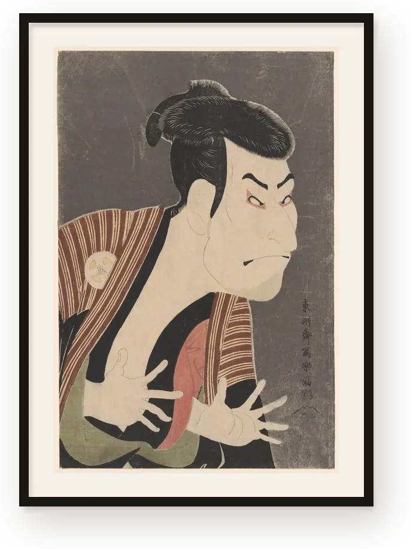
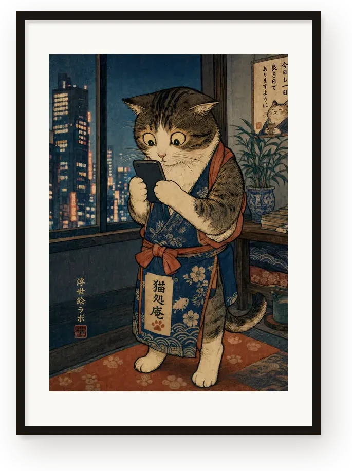

浮世絵は、美術館のガラスの向こうにあるものではない。
二百年前、町の人がそば一杯ほどの値段で買って楽しんだ絵である。
アートポスター

今様浮世絵
オリジナル
もし江戸の絵師が、いまの東京を見たら。スマートフォンに見入る猫、改札で立ち尽くす猫、雨の街をゆく蛙。江戸の様式で、いまの一場面を描いています。
制作には AI を用いています。
作品を見るどちらも一枚ずつ受注生産でお届けします。
お求めは
日本語｜国内送料無料
BASE
強化マット紙のポスターです。美術館蔵の浮世絵は A2、今様浮世絵は 21×30cm と A2。額は付属しません。国内送料無料でお届けします。
BASE で見る英語・米ドル｜米国と日本へお届け
Etsy
ジクレー印刷のアートプリントです。額に入れた状態でお届けする作品もあります。印刷は提携先の海外の工場で行うため、日本へのお届けは 2〜4 週間ほどかかります。
Giclée fine art prints: reproductions of Edo-period ukiyo-e from public-domain museum collections, and our original Imayō Ukiyo-e series, created with AI tools. Some pieces come framed. Every print is made to order by our production partner, Gelato, and ships to the US and Japan. Prices are in US dollars.
Etsy で見るそのほかの届けもの
運営者情報
- 屋号
- 浮世絵ラボ（Ukiyoe Lab）
- 事業内容
- デジタルコンテンツの制作・販売、モバイルアプリの開発・配信
- お問い合わせ
- JavaScript を有効にするとメールアドレスが表示されます
当サイトでは直接の商品販売は行っておりません。各商品の販売・お取引は、BASE・Etsy・note・App Store の各プラットフォームにて行われます。